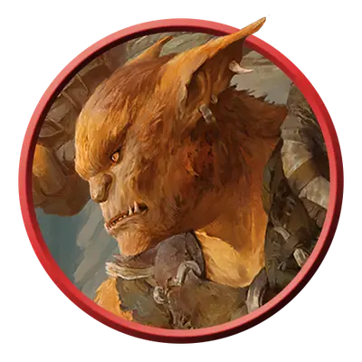

Медвежатник-воин
Bugbear Warrior
Средняя Фея (Гоблиноид), Хаотичная Злая

Класс Защиты 14 Инициатива +2 (12)
Хиты 33 (6к8 + 6)
Скорость 30 футов
| мод | спас | ||
|---|---|---|---|
| СИЛ | 15 | +2 | +2 |
| ЛОВ | 14 | +2 | +2 |
| ТЕЛ | 13 | +1 | +1 |
| мод | спас | ||
|---|---|---|---|
| ИНТ | 8 | −1 | −1 |
| МДР | 11 | +0 | +0 |
| ХАР | 9 | −1 | −1 |
Чувства Тёмное зрение 60 футов, пассивное Восприятие 10
Языки Общий, Гоблинский
Опасность 1 (200 опыта; БВ +2)
Особенности
Похищение. Медвежатник может не тратить дополнительные футы перемещения при перемещении Схваченного им существа.
Действия
Захват. Бросок рукопашной атаки: +4, досягаемость 10 фт. Попадание: 9 (2к6 + 2) Дробящего урона. Если цель Среднего размера или меньше, она получает состояние Схваченный (Сл высвобождения из захвата 12).
Лёгкий молот. Бросок рукопашной или дальнобойной атаки: +4 (с Преимуществом, если цель Схвачена этим медвежатником), досягаемость 10 фт. или дистанция 20/60 фт. Попадание: 9 (3к4 + 2) Дробящего урона.
Бонус мастерства +2
Среда обитания Леса, Луга, Подземье, Страна фей
Сокровища Личные, Оружейные
Медвежатники
Медвежатники — воплощение страха перед дикими землями и опасностью, затаившейся в тени чащоб. Они славятся своей незаметностью, и враги, осмелившиеся ступить на их землю, часто исчезают без следа.
Медвежатники-воины готовы служить тем, кто предложит им сокровища, пищу или шанс поохотиться на опасную добычу.